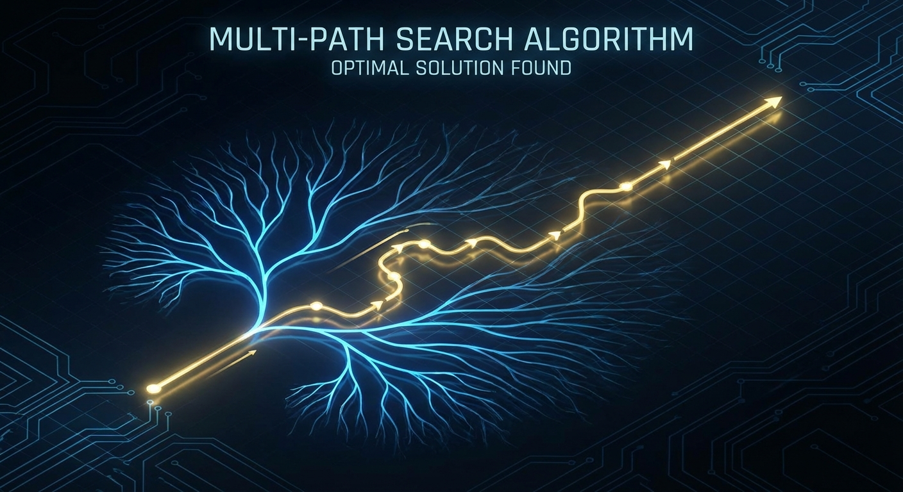

Mathematical Reasoning
Solve complex mathematical problems through rigorous, step-by-step logical reasoning. This task breaks down theorems and equations into verifiable atomic steps, explores multiple solution paths, and generates formal proofs with LaTeX precision.
Key Capabilities

Multi-Path Search
Explores multiple solution branches simultaneously, backtracking from dead ends to find the optimal proof path.
Atomic Verification
Every logical step is isolated and verified for mathematical validity before proceeding to the next.
LaTeX Integration
Natively speaks MathJax/LaTeX, rendering complex algebraic and calculus notations beautifully.
Interactive Simulator
Configure the reasoning engine and watch it solve problems in real-time.
Run the simulation to see the analysis overview.
Reasoning Pipeline
Input Analysis
Parses problem statement and identifies goal state.
Path Search
Generates atomic steps and explores alternative branches.
Verification
Validates each step against mathematical axioms.
Formal Proof
Compiles successful path into a readable proof.
When to Use
Educational Support
Generate detailed, step-by-step explanations for calculus or algebra problems to aid learning.
Theorem Proving
Assist in validating mathematical hypotheses by exploring logical consequences of axioms.
Algorithm Verification
Formally prove the correctness of mathematical logic used within software algorithms.